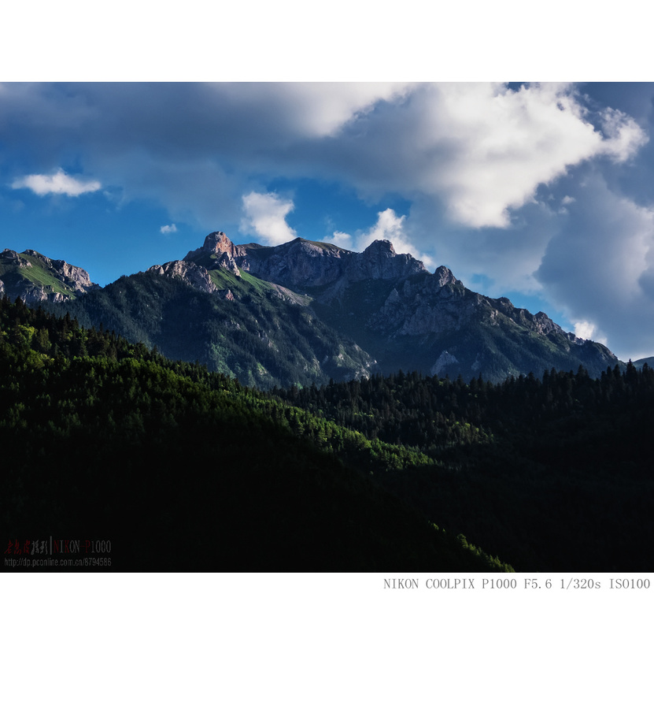

全球尺度看迭部：青藏高原东缘的生态孤岛
从行星尺度审视，理解一个西部小县为何与全球生态系统紧密相连。
迭部县位于北纬 33°39′—34°20′、东经 102°55′—104°05′ 之间，地处青藏高原东部边缘，是这一“世界屋脊”向秦巴山地过渡的关键节点。从行星尺度看，迭部正处在印度板块与欧亚板块碰撞挤压所形成的青藏高原隆升带的前缘，高原抬升与流水侵蚀的双重地质作用，塑造了今日重峦迭嶂、山高谷深的地貌格局。
迭部县总面积 5108.3 平方公里，海拔跨度约 1500 米至 4920 米。白龙江自西向东横贯全境，将群山分割为北侧迭山与南侧岷山。全境属非典型性大陆性气候，冬无严寒，夏无酷暑。

青藏高原平均海拔超过 4000 米，是全球面积最大、海拔最高的高原，被誉为“世界屋脊”“地球第三极”和“亚洲水塔”。它发育了长江、黄河、澜沧江、雅鲁藏布江等亚洲多条大江大河，为东亚、东南亚、南亚提供了丰富的水资源。同时，青藏高原的热力与动力作用深刻影响着东亚乃至全球的天气气候格局，是我国“两屏三带”生态安全格局的重要组成部分，也是亚洲乃至北半球重要的生态安全屏障。
迭部县正位于这一生态屏障的东缘关键地带。全县植被覆盖率达 89.63%，森林覆盖率达 64.87%，拥有 1671 种高等级植物和 183 种野生珍稀动物。作为白龙江上游重要水源涵养区和长江上游生态屏障的组成部分，迭部的森林生态系统在涵养水源、保持水土、维护生物多样性等方面发挥着不可替代的作用。青藏高原的“屏障”功能，在迭部这一县域尺度上得到了具体而微的呈现。


迭部扎尕那的农林牧复合系统于 2017 年被联合国粮农组织（FAO）认定为“全球重要农业文化遗产”。这意味着迭部不仅是一个中国县域，更是全球农业文化多样性保护网络中的正式成员。
扎尕那农林牧复合系统的农业生态系统特点
第一，垂直立体布局。扎尕那地处青藏高原、黄土高原、四川盆地三大地形交汇地带，平均海拔近 3000 米。当地居民将农田开垦在村寨与森林之间的缓坡上，形成旱作梯田景观，既保持土壤又涵养水源；更高处的草场用于放牧，森林则提供薪材、菌类等林下产品，形成“农养牧、牧肥田、林护生”的垂直循环格局。
第二，半农半牧的轮转智慧。群众“夏上高山、冬回河谷”，牲畜四季有草可食，高原脆弱的草场得以轮休生息。牦牛藏羊提供肉奶，牛羊粪便还田肥地，农牧业形成良性循环。林下采摘菌子、散养蕨麻猪等林下经济，进一步丰富了系统产出。
第三，藏汉农耕文化的融合体。该系统是汉地农耕文化与藏传游牧文化融合的产物，农林牧生产与藏传佛教文化、民俗节庆（如洛萨节、插箭节）相互交织，形成了人与自然和谐共生的文化景观。
全球气候变化并非一个遥远的概念，它正通过青藏高原这一敏感区，层层传导到迭部的山水之间。理解这条“全球—高原—县域”的影响链条，是培养学生生态文明意识与家国情怀的重要切入点。
全球气候变化 → 青藏高原的响应
青藏高原是全球气候变化最为敏感的地带之一。研究表明，近 50 年来青藏高原暖湿化显著，年平均气温增速超过同期全球平均水平的两倍，极端高温和极端降水事件频繁发生。冰川退缩、冻土消融、“水塔”功能不稳定性加大等现象随之加剧，气象灾害及衍生灾害增多。青藏高原的升温不仅改变自身的水文格局，还通过大气环流与水系传导，影响下游广大地区。
青藏高原 → 迭部县的传导
迭部县地处青藏高原东缘，其气候变化趋势与高原整体暖湿化背景一致，但又有局地特征。根据甘南州农区气象观测资料分析，1990—2022 年间迭部县气温呈显著上升趋势，气候倾向率约为 0.39℃/10 年；降水量同样呈增加趋势，气候倾向率为 25.9 mm/10 年。另据白龙江流域（迭部—武都段）的研究，近 40 年年均温加速上升约 0.198℃/10 年，降水总量缓升，但秋季暴雨量增幅突出。这意味着迭部面临的不只是“变暖”，还有降水节律改变带来的山地灾害风险上升——暖湿化梯度正在驱动灾害带向高海拔区域迁移。
| 区域 | 气温变化趋势 | 降水变化趋势 | 数据时段/来源 |
|---|---|---|---|
| 青藏高原（整体） | 年平均气温增速超过同期全球平均的两倍 | 暖湿化显著，东部半湿润区降水增加明显 | 近 50 年 / 科普中国、ScienceDirect |
| 迭部县（甘南农区站） | 约 0.39℃/10 年（上升） | 约 25.9 mm/10 年（增加） | 1990—2022 / 气象观测资料分析 |
| 白龙江流域（迭部—武都段） | 约 0.198℃/10 年（加速上升） | 总量缓升（+6.41 mm/10 年），秋季暴雨量突出 | 1980—2020 / 栅格气象数据研究 |
迭部的全球尺度内容，可与人教版初中地理教材多个章节建立直接链接。下表以“教材知识点 → 迭部案例 → 核心素养”为线索呈现。
| 具体章节 | 核心知识点 | 教学切入点（迭部案例） | 核心素养 |
|---|---|---|---|
| 七年级上册 第二章 陆地和海洋 第二节 海陆的变迁 |
板块构造学说；青藏高原的成因 | 先讲印度板块与欧亚板块碰撞抬升青藏高原（全球/板块尺度），再出示迭部“重峦迭嶂、山高谷深”的地貌，引导学生思考“家乡的山为什么这么高、谷为什么这么深”，把抽象板块理论落到脚下的土地。 | 综合思维（宏观地质过程与区域地貌的关联）；区域认知（家乡在板块格局中的位置） |
| 七年级上册 第三章 天气与气候 第四节 世界的气候 |
地形对气候的影响；高原热力作用 | 青藏高原通过热力作用影响东亚季风系统，迭部“冬无严寒、夏无酷暑”的非典型性大陆性气候与高原地形效应相关。可作为“地形如何塑造家乡气候”的探究素材。 | 综合思维（地形—气候的因果链条）；地理实践力（观察家乡气候特征并尝试解释） |
| 八年级上册 第五章 发展与合作 （或相关章节） |
国际合作；国际组织；文化多样性保护 | 扎尕那农林牧复合系统被 FAO 认定为全球重要农业文化遗产。以此为切入点，让学生理解一个西部县域如何通过国际合作获得全球认可，以及国际组织在文化多样性保护中的作用。 | 区域认知（全球联系中的家乡）；人地协调观（传统农业智慧对可持续发展的启示） |
| 八年级上册 第二章 中国的自然环境 第四节 自然灾害（拓展） |
自然灾害的成因与分布；气候变化的影响 | 结合白龙江流域暖湿化背景下暴雨增多、山地灾害风险上升的研究，引导学生讨论：气候变化如何改变家乡的灾害风险？我们可以做哪些适应与防范？ | 人地协调观（人类活动与气候风险的应对）；地理实践力（灾害防范意识与行动） |
教学落点建议（点击展开）
任务：为迭部制作一张“全球连接名片”
假设你是一名迭部县的“生态推介员”，需要向外界说明迭部与全球体系的三重连接。请以小组为单位完成以下探究：
- 定位连接：在地图或地球仪上指出迭部的位置，用一句话说明它与青藏高原、与亚洲水系的关系。
地理提示（点击展开）
先找纬度带（北纬 33°—34°）与青藏高原东缘，再找白龙江—嘉陵江—长江的水系归属线索；注意“位置”要同时说清绝对位置（经纬度）和相对位置（与高原、水系的关系）。 - 遗产连接：查阅 FAO 全球重要农业文化遗产名录中扎尕那系统的介绍，提炼出两个最能体现“全球价值”的农业生态特点，并解释为什么这些特点对世界其他山区也有借鉴意义。
地理提示（点击展开）
从“垂直立体布局”“半农半牧轮转”“藏汉文化融合”中任选两个，用“海拔—土地利用—生产方式”的链条说明其生态合理性；思考山区共同面临的坡度大、生态脆弱等问题，这些特点为什么具有普遍借鉴意义。 - 气候连接：结合本页提供的气温降水数据，讨论：如果迭部未来 10 年继续保持升温增湿趋势，你认为对当地森林、农业、河流分别可能产生什么影响？至少提出一条“适应建议”。
地理提示（点击展开）
用“气温↑、降水↑且季节分配改变”作为前提，分别推理对森林（病虫害、火灾、植被带迁移）、农业（作物熟制、灾害风险）、河流（径流量、泥沙、洪水）的影响；适应建议要具体可操作，如调整种植结构、加强山地灾害监测、保护水源涵养林等。
成果形式：一张 A3 手绘或电子海报，包含地图标注、关键数据、核心观点。下节课分组展示，每人用 1 分钟说明自己小组的“全球连接”结论。